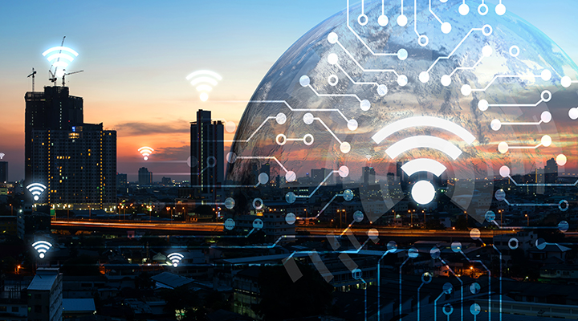

¿Qué son las ciudades inteligentes?
Una ciudad inteligente es aquella que utiliza tecnologías digitales para mejorar diferentes aspectos de la vida urbana. Estas tecnologías permiten obtener información y utilizarla para tomar decisiones sobre los servicios y recursos de la ciudad.
El desarrollo de una ciudad inteligente puede incluir sistemas de transporte, sensores, plataformas digitales, sistemas de seguridad y herramientas para analizar grandes cantidades de datos.
El objetivo es lograr ciudades más organizadas, conectadas y eficientes, buscando que la tecnología contribuya a solucionar problemas urbanos y mejorar los servicios para los ciudadanos.
📡 Sensores
Los sensores son dispositivos que permiten recopilar información del entorno. En una ciudad inteligente pueden utilizarse para conocer diferentes condiciones y ayudar a los sistemas urbanos a responder a las necesidades de la población.
- Sensores de tráfico.
- Sensores de calidad del aire.
- Sensores de temperatura.
- Sensores de iluminación.
- Sensores para controlar el consumo de agua.
📊 Datos
Los datos son fundamentales para el funcionamiento de una ciudad inteligente. Los sensores y otros sistemas pueden recopilar información que posteriormente puede ser analizada para conocer lo que ocurre en diferentes lugares de la ciudad.
El análisis de datos puede ayudar a identificar problemas, mejorar procesos y apoyar la planificación de los servicios urbanos.
- Recopilación de información.
- Análisis de datos.
- Información en tiempo real.
- Apoyo para la toma de decisiones.
🚍 Movilidad inteligente
La movilidad inteligente utiliza tecnología para mejorar el transporte y facilitar los desplazamientos de las personas. Puede utilizar información sobre el tráfico y el transporte público para ayudar a organizar mejor la movilidad urbana.
- Semáforos inteligentes.
- Transporte público conectado.
- Aplicaciones de movilidad.
- Sistemas de información sobre tráfico.
🛡️ Seguridad
La tecnología también puede utilizarse para apoyar la seguridad de los espacios urbanos. Los sistemas tecnológicos permiten recopilar información y facilitar la comunicación entre diferentes servicios de emergencia y autoridades.
- Sistemas de monitoreo.
- Cámaras de seguridad.
- Sistemas de alerta.
- Comunicación para emergencias.
💻 Servicios digitales
Los servicios digitales permiten que los ciudadanos puedan acceder a diferentes servicios públicos mediante plataformas tecnológicas. Esto puede facilitar algunos trámites y mejorar la comunicación entre las instituciones y la ciudadanía.
- Trámites en línea.
- Aplicaciones para ciudadanos.
- Plataformas de información pública.
- Servicios digitales municipales.
Tabla de elementos de una ciudad inteligente
| Elemento | Función | Ejemplo |
|---|---|---|
| Sensores | Recopilar información del entorno | Sensor de calidad del aire |
| Datos | Analizar información para apoyar decisiones | Datos del tráfico |
| Movilidad | Mejorar el transporte urbano | Semáforos inteligentes |
| Seguridad | Apoyar el monitoreo y la atención de emergencias | Sistemas de alerta |
| Servicios digitales | Facilitar el acceso a servicios | Trámites en línea |
Imagen de una ciudad inteligente
